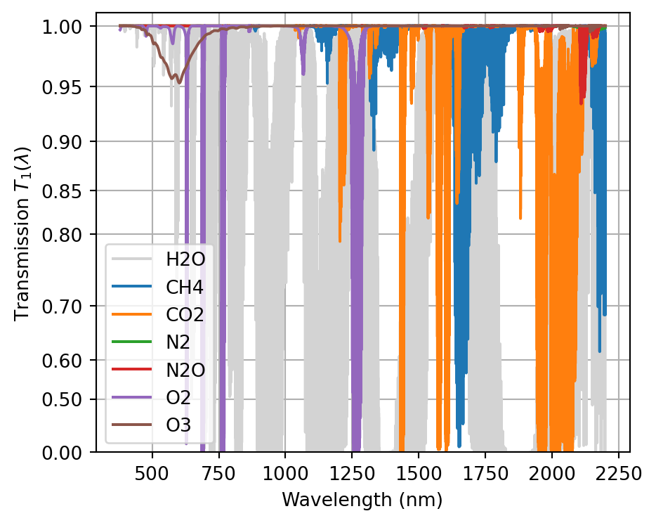
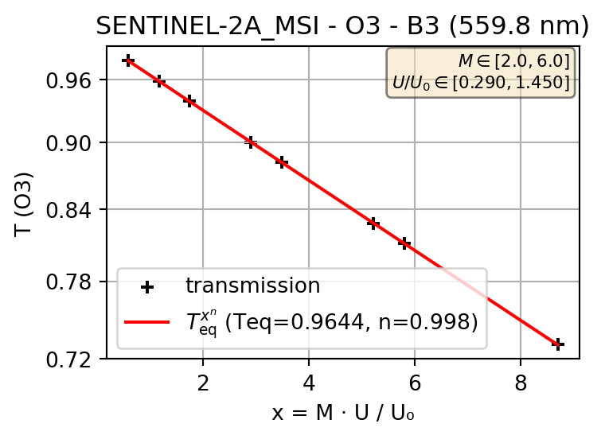
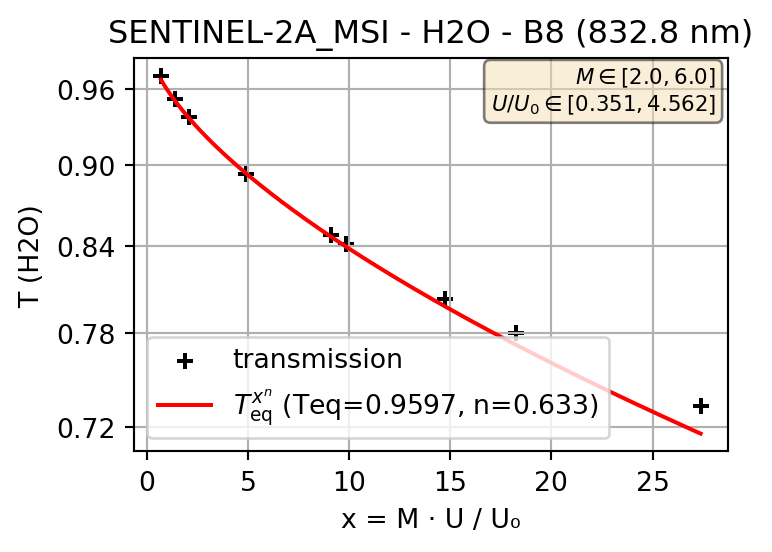

Gaseous absorption correction
1 Overview
The correction for the gaseous absorption of various gases is applied before Rayleigh correction, thus the coupling between absorption and scattering is neglected. The gaseous-corrected reflectance is obtained from the TOA reflectance as:
\[\rho_{\text{gc}} = \frac{\rho_{\text{TOA}}}{t_g}\]
where \(\rho_{\text{TOA}}\) is the top-of-atmosphere reflectance and \(t_g\) is the gaseous absorption transmittance along the downward + upward (solar and sensor view) path.
The eotools.gaseous_correction module provides several classes implementing a generic correction for gaseous absorption:
| Gas | Gas_correction_CKDMIP |
Gas_correction_O3 |
Gas_correction_NO2 |
|---|---|---|---|
| References | (Hogan and Matricardi 2022; Anderson et al. 1986) | NASA O3 | NASA NO2 |
| CH₄ | ✓ | ||
| CO₂ | ✓ | ||
| H₂O | ✓ | ||
| N₂ | ✓ | ||
| N₂O | ✓ | ||
| O₂ | ✓ | ||
| O₃ | ✓ | ✓ | |
| NO₂ | ✓ |
Gas_correction_O3&Gas_correction_NO2: Legacy correction modules using absorption cross-section data integrated with the sensor SRF.Gas_correction_CKDMIP: Modern correction using the CKDMIP high-resolution line-by-line transmission model, supporting multiple absorbing gases simultaneously.
Gas_correction is a proxy to the above classes. By default, it uses Gas_correction_O3 and Gas_correction_NO2, but Gas_correction_O3 can be replaced by Gas_correction_CKDMIP via an option.
1.1 Gas_correction_O3
The Gas_correction_O3 class corrects for ozone (O₃) absorption using cross-section data from NASA Ocean Color (Anderson et al.). The absorption coefficient \(K_{\text{O}_3}\) is computed per band by integrating the cross-section data with the sensor SRF, or by interpolation at central wavelengths when no SRF is available.
The correction follows the Beer-Lambert law:
\[T_{\text{O}_3} = \exp(-K_{\text{O}_3} \cdot U_{\text{O}_3} \cdot M)\]
where \(U_{\text{O}_3}\) is the total column ozone in Dobson Units and \(M\) is the air mass factor. The TOA reflectance is then divided by the transmittance: \(\rho_{\text{gc}} = \rho_{\text{TOA}} / T_{\text{O}_3}\).
Inputs required: Total column ozone (Dobson Units), air mass.
2 Gas_correction_NO2
The Gas_correction_NO2 class corrects for nitrogen dioxide (NO₂) absorption using cross-section data from NASA Ocean Color (Bogumil et al. 2003). The absorption coefficient \(K_{\text{NO}_2}\) is computed per band by integrating with the sensor SRF or by interpolation at central wavelengths.
NO₂ column amounts are derived from climatology data (HDF files) combined with a tropospheric NO₂ factor at 200 m resolution. The correction follows the same Beer-Lambert transmission model as O₃.
Inputs required: Latitude, longitude, acquisition date (for climatology lookup), air mass.
3 CKDMIP
The Gas_correction_CKDMIP class provides modern gaseous correction using the CKDMIP high-resolution line-by-line transmission model.
3.1 High spectral resolution line-by-line dataset
Gas optical depths per layer are obtained for each considered gas from the CKDMIP high-resolution line-by-line database (Hogan and Matricardi 2022) via the gatiab interface, where the atmospheric profiles are provided by AFGL (Anderson et al. 1986). By default the AFGL-US profile is used. These profiles are then integrated to obtain, for each gas, the total column optical depth at a high spectral resolution, \(T_1(\lambda)\), for unit air mass and a nominal gas quantity \(U = U_0\) (see Table 1).
| Gas | \(U_0\) |
|---|---|
| CH₄ | 9.46 × 10⁻⁴ g/cm² |
| CO₂ | 0.519 g/cm² |
| H₂O | 1.42 g/cm² |
| N₂ | 782 g/cm² |
| N₂O | 4.83 × 10⁻⁴ g/cm² |
| O₂ | 239 g/cm² |
| O₃ | 345 Dobson |
The numerical values of \(T_1(\lambda)\) are stored in the file gaseous_absorption_model_gatiab_ckdmip_v1.nc for each gas.
3.2 Integrated transmission model
3.2.1 Model description
The monochromatic transmission coefficient for an arbitrary air mass \(M\) and gas content \(U\) follows the Beer-Lambert law: and can be expressed as \(T_1(\lambda)^x\), where \(T_1(\lambda)\) is given for each gas at \(x=1\), with \(x = M \cdot U/U_0\) (air mass × gas content / nominal gas content). This expression is used for numerical reasons instead of the classical exponential law, so that \(T_1(\lambda) \in [0, 1]\).
For a given sensor band with SRF \(S(\lambda)\), the integrated transmission is defined as:
\[\bar{T}(x) = \frac{\int S(\lambda) T_1(\lambda)^x \, d\lambda}{\int S(\lambda) \, d\lambda} \tag{1}\]
This integrated transmission does not necessarily follow the Beer-Lambert law, thus we propose a model in the form of \(\bar{T}(x) = T_\text{eq}^{x^n}\). On Figure 2 (a) the model closely follows the Beer-Lambert law (\(n \approx 1\)), but not on Figure 2 (b) (\(n=0.633\)).
The following plots illustrate the fitted transmission model \(\bar{T}(x) = T_\text{eq}^{x^n}\) for selected Sentinel-2A bands and gases.


3.2.2 Numerical integration method
This section provides a method to calculate on the fly (the values of $T_eq$ and $n$ are not stored), for a given sensor band (SRF), the parameters of the model (\(T_\text{eq}\) and \(n\)). This method consists in calculating \(\bar{T}(x)\) and its derivative, for a single value of \(x = x_0\). This requires only two integrations of the SRF, and avoids integrating the SRF over many values of \(x\) for linear regression.
The derivative of the integrated transmission is:
\[\bar{T}'(x) = \frac{\int S(\lambda) T_1(\lambda)^x \ln T_1(\lambda) \, d\lambda}{\int S(\lambda) \, d\lambda} \tag{2}\]
We model the integrated transmission as:
\[\bar{T}(x) = T_\text{eq}^{(x^n)} \tag{3}\]
Then, the derivative of \(\bar{T}(x)\) at \(x=x_0\) is:
\[{\bar{T}'}(x_0) = n T_\text{eq}^{x_0^n} \ln T_\text{eq} \cdot x_0^{n-1}\]
Using \(\bar{T}(x_0) = T_\text{eq}^{x_0^n}\) and \(\ln \bar{T}(x_0) = x_0^n \ln T_\text{eq}\), this expression simplifies:
\[{\bar{T}'}(x_0) = n \cdot \frac{\bar{T}(x_0)\,\ln \bar{T}(x_0)}{x_0}\]
Then \(n\) can be solved by:
\[n = \frac{{\bar{T}'}(x_0) \cdot x_0}{\bar{T}(x_0) \cdot \ln \bar{T}(x_0)} \tag{4}\]
The values of \(\bar{T}(x_0)\) and \(\bar{T'}(x_0)\) are calculated using equations 1 and 2.
For \(T_\text{eq}\), and having solved for \(n\), Equation 3 gives:
\[T_\text{eq} = \bar{T}(x_0)^{\,x_0^{-n}} \tag{5}\]
In practice, this method is implemented in transmission_model_single with a default value of \(x_0 = 5\).
References
Anderson, G. P., S. A. Clough, F. X. Kneizys, J. H. Chetwynd, and E. P. Shettle. 1986. AFGL Atmospheric Constituent Profiles (0–120 Km). AFGL-TR-86-0110. Air Force Geophysics Laboratory.
Hogan, Robin J., and Marco Matricardi. 2022. “A Tool for Generating Fast k-Distribution Gas-Optics Models for Weather and Climate Applications.” Journal of Advances in Modeling Earth Systems 14 (10). https://doi.org/10.1029/2022ms003033.